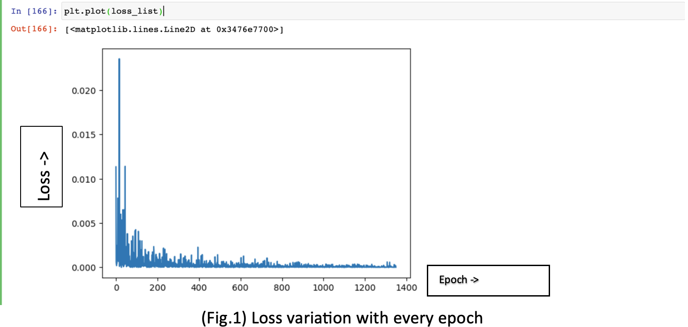
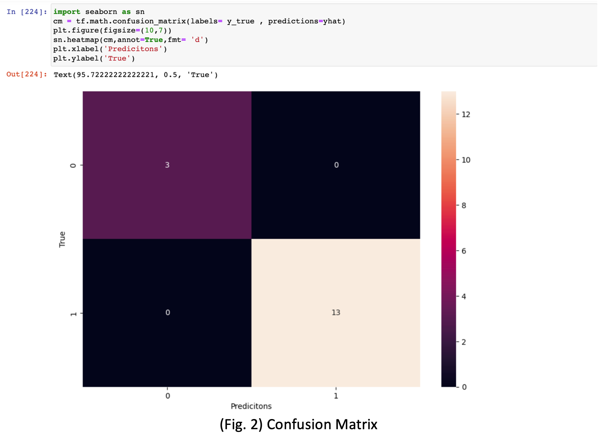
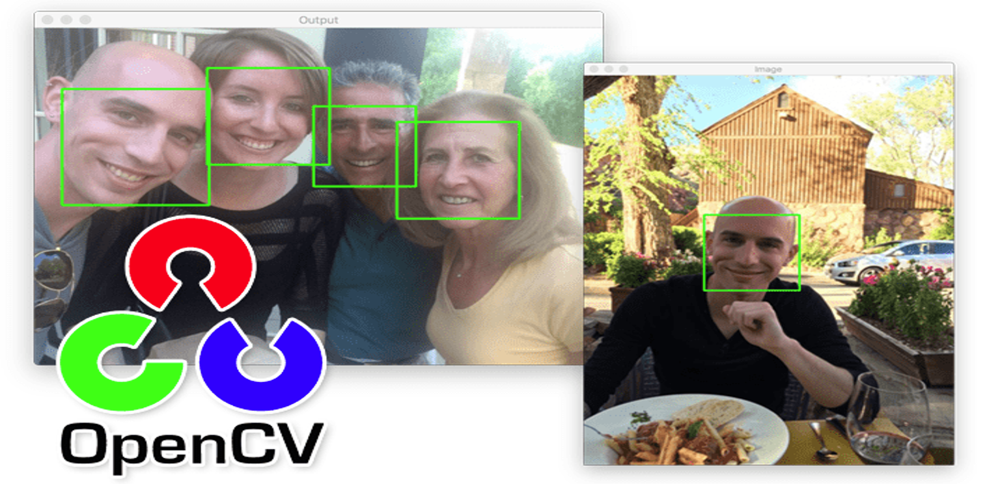

Facial Recognition is something you we can see everywhere in our day to life, like in phones and other equipment for security purposes. In humans also faces this phenomenon a lot or I would say nearly their whole life from childhood to their last breath . So in this project I’ve tried to build an application for facial recognition to verify faces on run time on the concept of one short learning means we need very fever amount data to achieve state-of-the-art (SOTA) performance that means the best models you can use for any particular task, for now we will not dig into it too much we’ll learn further about it when we will discuss about Siamese neural network. This is gonna be a really good discussion, I will discuss and explain you everything about my project step by step. Project overview: Before going in depth of Siamese neural network let’s take an overview about the whole process. The first thing is to collect data as we are working with Siamese neural networks the best part about Siamese neural network we can achieve the state-of-the-art performance when very less data is available. After collecting data we’ll train our Siamese neural network. This took a lit time around 30-40 minutes. After training we’ll test out model by predicting outputs of some test samples that outputs we’ve predicted we’ll call it yhat. Then we’ll compare out predicted outputs to the true outputs and then calculate the precision , recall and accuracy of the model and we’ll call the true outputs as ytrue. The figure 1 loss variation is shown with respect to every epoch we’ll dig this more when we’ll discuss about the Siamese neural networks, but if you have any idea about the machine learning then you’ll most probably able to understand the figure1.
In fig.1 loss is decreasing with every epoch. And now we see the performance of the model with the help of confusion matrix it might be little confusing for someone if he/she is seeing it for the first time but I’ll explain it on a quick note all we want is that number of diagonal element should be high and other than diagonal elements shows the wrong predictions and diagonal elements shows the correct predictions. In fig.2 we can see that the model is predicting all the inputs correct even though I’ve used the less amount of test samples but still the model is working amazing with the precision and recall equal to 1 and we can evaluate the accuracy of the model 2*(P*R)/(P+R) is the formula used to evaluate the accuracy of the model with the help of precision and recall.
As you can see that the model is performing really good in test samples it’s time to test it on real time. For real time testing OpenCV is the library used to access the webcam of the laptop or any other external webcam connected to the laptop or computer. If you want to learn more about the OpenCV then you can visit this link (OpenCV documentation).On testing it on real time our first task is to extract the face from the video frame, so I used OpenCV Haar cascade module to detect face, if you want to know more about the haar cascade like how it detects face then you can visits this link because if we go there then it gonna be so long as its itself a really big and really interesting topic I personally like that topic a lot. I got really amazed when I get to know about the face detection, hog images etc concepts. But not going in too deep we just discuss the important part that with the help haar cascade we’ll get the square matrix and in that square matrix the face is present in other words it will make a square around the face as shown in the fig.3 and returns the coordinates of the square box. This is something you might have seen many time in Sci-fi movies and all . Ok! Let’s get back to our topic, with those coordinates we’ll crop the part of the frame where face is present then we’ll resize it to dimension of the cropped image for further processing .
First of all after cropping we’ll make the coloured image to grayscale image because for feature detection, recognition from the face there is no need of colours in them so to decrease the computation we make the RGB image to grayscale image then resize it to the dimension (105x105x1) from (AxAx3). We’ll do all this processing just to get the face part because all the other remaining part of the frame is useless for recognizing the face.
You might be wondering why I’ve used the dimension 105x105 rather than any other random AxA, we’ll also get into that when discussing about Siamese neural network. So, after that we’ll pass the processed image to our model the it’ll predict the output. Then after we’ll save the model and integrate it to kivy to make it fully functional user friendly application .So this is the whole overview of the model building.